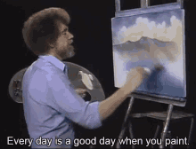
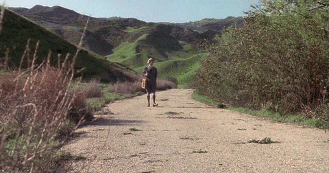

My hobbies
- I enjoy playing computer games with my friends and spending time together having fun.
Whether we’re exploring virtual worlds or challenging each other in competitive games,
these moments are always full of laughter and good energy. It’s our favorite way to relax
and enjoy our free time.
- I enjoy practicing Greco-Roman wrestling; it’s a way for me to release stress and relax.
This sport has taught me a lot about discipline, self-control, and respect. Besides the physical
benefits, wrestling helps me balance my mind and body, giving me a sense of freedom and calm.
- I love cooking different dishes, especially creating new meals. Although desserts aren’t my strong
suit, sometimes I surprise myself and they turn out well! The process of cooking allows me to be
creative and experiment, and the final result is always satisfying, whether it’s a dessert or a delicious
main course.
- I enjoy painting, drawing, and creating things through DIY projects. These activities are a form of
expression for me and allow me to develop my creativity. Whether it’s a new canvas or a craft project,
I feel inspired to create something unique and personal.

- I love nature and exploring places filled with beautiful landscapes.Every walk in nature calms me and fills
me with positive energy. The stunning views, the sound of the wind through the trees, and the fresh air make me
feel truly connected to the peace and beauty of the world around me.
